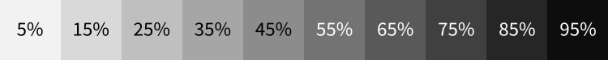
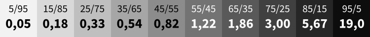
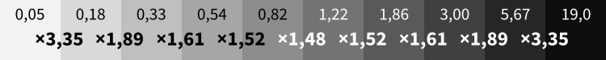
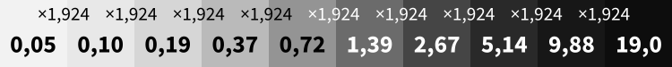
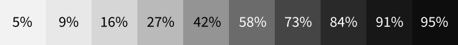
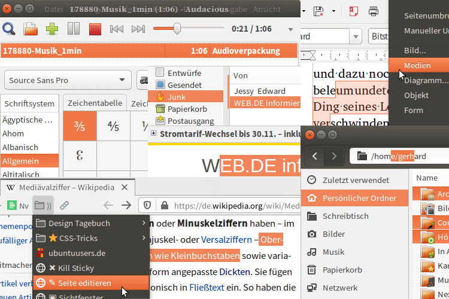

Auf dieser Website ist Platz für das, wofür mein Twitterprofil @charakterziffer nicht ausreicht. Mein Blog ist als Plus zu meinen Tweets gedacht, eben „@cz+“. // Die letzten drei Artikel:
Achtung, es folgt ein ziemlich nerdiger Blogartikel mit einigem an Mathematik!
Angenommen, eine Infografik soll verschiedene Intensitätswerte ausdrücken, von ganz schwach bis sehr stark. Klingt zunächst ziemlich einfach und sofort hat man eine Palette gebastelt, bei der die Farbdichte von 5 % bis 95 % gleichmäßig zunimmt:

Doch komisch: Obwohl die Helligkeit von einer Stufe zur nächsten jeweils um 10 % abnimmt, wirkt die Verteilung überhaupt nicht gleichmäßig. Gerade an den Enden der Skala scheinen die Unterschiede stärker zu sein. Zwischen 5 % und 15 % scheint die Helligkeit mehr abzunehmen als in der Mitte von 35 % bis 65 % Grau. Auch von 85 % zu 95 % wirken die Unterschiede größer.
Unsere Wahrnehmung ist relativ
Mathematisch lineare Graustufen erscheinen uns Menschen ungleichmäßig, weil wir Intensitäten nicht absolut wahrnehmen, sondern immer im Verhältnis zueinander. Als Vergleich ein Beispiel aus der Akustik: Zwischen absoluter Stille und einem Uhrticken erscheint uns der Lautstärkeunterschied viel größer als zwischen einem hupenden Auto und einem hupenden Auto, auf dem noch eine Uhr tickt. Dabei ist der Lautstärke-Unterschied in beiden Fällen gleich groß, nämlich die Lautstärke einer tickenden Uhr.
Um die Intensitäten der grauen Felder in der Skala vergleichen zu können, muss man die Prozente erst mal in ein Schwarz-Weiß-Verhältnis umrechnen (genannt v). Man stelle sich vor, auf jedem Feld liegen 100 Kügelchen, entweder schwarz oder weiß. Zum Beispiel beinhaltet die Fläche mit 15 % dann 15 schwarze Kügelchen und 85 weiße (= 100 – 15). Das Verhältnis von Schwarz zu Weiß ist für dieses Feld 15 zu 85 oder als Dezimalzahl ausgedrückt 0,18 (= 15 ÷ 85). Auf unsere Grauskala übertragen sieht das dann folgendermaßen aus:

Mit den Schwarz-Weiß-Verhältnissen lässt sich jetzt nachrechnen, wie stark die Farbdichte von Stufe zu Stufe zunimmt – und zwar relativ betrachtet: Mit welchem Faktor muss man das Schwarz-Weiß-Verhältnis eines Feldes multiplizieren, um zum nächsten Feld zu kommen? Zur Info: Ich habe mit den genauen Brüchen gerechnet, nicht mit den gerundeten Zahlen in der Skizze; also nicht 0,18÷0,05 sondern (15/85)÷(5/95).

Und jetzt bestätigt, was wir am Anfang wahrgenommen haben: Am linken und rechten Rand der Skala sind die Faktoren zwischen den Felder viel größer (3,35) als in der Mitte (1,48). Der Grauwert ändert sich außen tatsächlich stärker als innen – zumindest relativ, so wie wir Menschen es eben sehen.
Gleichmäßig abnehmende Helligkeit
Das Ziel ist natürlich, eine Grauskala zu bestimmen, bei der die Unterschiede zwischen den Stufen gleichmäßig erscheinen, also jeweils den gleichen Faktor haben. Voraussetzung für die Berechnung ist, dass die erste und letzte Stufe nicht ganz 0 oder 100 sind, sonst liegen deren Schwarz-Weiß-Verhältnisse bei 0/100 bzw. 100/0 (mit 0 und unendlich lässt sich schwer rechnen). Bleiben wir also bei 5 % für „Weiß“ und 95 % für „Schwarz“.
Es ergeben sich die Schwarz-Weiß-Verhältnisse (v) wie oben: 5/95 (0,05…) für Weiß und 95/5 (19,0) für Schwarz. Zwischen diesen Verhältnissen liegt ein Gesamtfaktor von 361 (= 95/5 ÷ 5/95). Diesen Faktor verteilen wir jetzt auf neun Zwischenschritte (genannt w), nämlich vom ersten bis zum zehnten Feld: Weiß × w = Feld2; Feld2 × w = Feld3; … Feld9 × w = Schwarz. Abgekürzt: Weiß × w9 = Schwarz.
Der Zwischenfaktor w lässt sich jetzt berechnen mit (Schwarz ÷ Weiß). In unserem Beispiel: w = 380 = 3801/9 = 1,92383… – das klingt plausibel, denn es liegt zwischen den extremen Faktoren 3,60 und 1,48. Dann wollen wir mal rückwärts gehen:
Der richtige Faktor
Mit dem berechneten Faktor w gerundet auf 1,924 ergibt sich eine Grauskala mit den folgenden Schwarz-Weiß-Verhältnissen v:

(Bitte wieder berücksichtigen, dass die Zahlen in der Skizze gerundet sind! Ich habe die Berechnung nicht mit 0,05 gestartet, sondern mit dem genauen Bruch 5/95.)
Das Schwarz-Weiß-Verhältnis v haben wir ja erhalten aus Schwarzanteil ÷ Weißanteil, wobei der Weißanteil die Menge zu den fehlenden 100 % war. Wir können uns die Prozentzahl von Schwarz (genannt x) berechnen aus der Formel für das Schwarz-Weiß-Verhältnis v = x ÷ (100 – x), umgestellt: x = 100v ÷ (1 + v). Und schon können wir die eben erstellte Grauskala mit Prozentwerten füllen:

Zum Vergleich nochmal die anfängliche Skala:
Und, erscheint die korrigierte Version nicht viel gleichmäßiger? Übrigens habe ich die Infos zu diesem Phänomen und die ganze Berechnung aus Jacques Bertins Standardwerk „Graphische Semiologie“ (dt. 1974). Dort findet sich dieses Thema auf den Seiten 82/83 unter der Überschrift „Konstruktion äquidistanter Helligkeitswert-Stufen“.
Der Autor empfiehlt am Ende der Berechnung noch eine Korrektur der hellen Farbwerte vorzunehmen und kommt letztlich zur Prozentreihe Weiß, 9, 19, 31, 45, 60, 74, 84, 91 und Schwarz. Ich vermute aber, das hat mit dem nicht ganz reinweißen Papier zu tun. Hier am Bildschirm würde ich persönlich eher die dunkleren Grautöne ein wenig aufhellen.
Abschließendes Beispiel
Als schnelle Zusammenfassung noch ein zweites Beispiel. Gesucht ist eine siebenstufige Skala von 3%-Weiß zu 99%-Schwarz. Der Gesamtfaktor zwischen dem Schwarz (v = 99/1) und Weiß (v = 3/97) ist (99/1)÷(3/97) = 3201. Das dann verteilt auf sechs Zwischenschritte w = 32011/6 = 3,83896…, was ich mal auf 3,839 runde.
Beginnende mit 3/97 für Weiß ergeben sich folgende Schwarz-Weiß-Verhältnisse: 0,03 / 0,12 / 0,46 / 1,75 / 6,72 / 25,8 / 99,0. Daraus lassen sich schließlich mit x = 100v ÷ (1 + v) folgende Prozentwerte berechnen: 3% / 11% / 31% / 64% / 87% / 96% / 99%. Und so siehst das ganze aus:
(Und hier müsste man auf jeden Fall die dunklen Werte anpassen – glaube nie der reinen Mathematik, wenn es um Wahrnehmung geht!) Wer übrigens keine Lust auf diese Rechnerei hat, es mit der Helligkeitszunahme nicht ganz so genau nehmen muss oder für eine Infografik mehr braucht, als eine monochrome Farbskala, dem hilft der Data Color Picker oder der Chroma.js Color Palette Helper.
❦ Der Golem ist geformt; mal abwarten, ob er sich selbst beatmet.
… so lautete mein erster Tweet, den ich am 19. Januar 2010 veröffentlicht habe. Es sind jetzt also zehn Jahre, in denen ich Twitter nutze. Anfangs habe ich täglich einen Tweet verfasst und sah das ganze als kreative Herausforderung. Dazwischen habe ich ein paar mal einen Monat pausiert, die Tweetdichte hat nachgelassen. Im Gegenzug habe ich Twitter zusätzlich zur Kommunikation genutzt.
Meine Erwartungen an den „Mikroblogging-Dienst“ hatte ich einen Monat nach Beginn als kleine, kritische Serie formuliert:
✉ Wozu Twitter (1/9)? Kontakt mit Freunden halten. Alternativen: Brief, Telefon, E-Mail, SMS, Treffen. Meistens persönlicher, direkter. (#)
⚠ Wozu Twitter (2/9)? Themen verfolgen, sich passiv informieren. Alternativ: Newsletter, RSS-Feed, Podcast. Meist ausführlicher, spezieller. (#)
➴ Wozu Twitter (3/9)? Schnell Antworten erhalten. Funktioniert nur bei gutem Netzwerk. Alternativ: Eigene Recherche. Meist zeitaufwändiger. (#)
Die weiteren Folgen dieser Serie sind komischerweise nicht mehr online. Sucht man meine Tweets bis Oktober 2010 fehlen dazwischen fünf Monate. Zum Glück kopiere ich meine Tweets immer in ein Textdokument – dann geht nichts verloren:
⚔ Wozu Twitter (4/9)? Ersatz für Chat. Schließt andere aber oft aus, erzeugt unwichtiges Rauschen. Alternative: Direktkontakt.
⚄ Wozu Twitter (5/9)? Alternativ zur Suchmaschine, zufälligerer Weg ins Netz. Als Spielwiese, auf der man interessante Perlen finden könnte.
✍ Wozu Twitter (6/9)? Persönliche Statusmeldungen absetzen, »Ich bin hier«. Wie relevant, beständig ist das für meine Leser?
⚐ Wozu Twitter (7/9)? Werbung für sich, sein Blog, seine Firma – kurz gesagt: Aufmerksamkeit erregen. Was bringt mir der digitale Applaus?
↺ Wozu Twitter (8/9)? Soziale Wahrnehmung erweitern, was passiert um mich herum? Erzeugt Gemeinschaftsgefühl, nicht allein vor dem Computer.
⚡ Wozu Twitter (9/9)? Kreativ werden durch die Beschränkungen von Twitter, Kurzideen austesten. Inspiration gewinnen durch strenges Format.
Auch nach dieser Serie hat mich Twitter noch eine ganze Weile fasziniert. Die ersten dreizehn Artikel dieses Blogs (im Archiv ganz unten) haben sich alle mit verschiedenen Aspekten von Twitter beschäftigt, zum Beispiel mit Echtzeit und Relevanz, wem ich gerne folge oder was ich überhaupt twittere.
Zehn Jahre später …
Wenn ich Twitter mal aus der heutigen Warte aus betrachte, dann ist es eigentlich nichts Besonderes mehr (im positiven wie negativen Sinne). Ich bedaure, wie kurzlebig so ein Tweet ist, selbst wenn man etwas mehr Einfallsreichtum hineingesteckt hat. Es bleibt gefühlt nichts hängen.
Was ich auf Twitter lese, sind vielfältige Infohäppchen. Viel hat mit Typografie und Medien zu tun, manchmal Nachrichten und Politik. Ich versuche Empörungsverbreiter zu meiden und folge eher ruhigen, besonnenen Leuten. Meist ist meine Timeline dadurch unterhaltsam, versorgt mich mit Entdeckungen und erweitert meinen Horizont – bedingt durch ihre Mischung ist aber auch Belangloses dabei.
Es ist eine Gewohnheit geworden, Twitter zu nutzen. Und bei diesem Stichwort fällt mir das Buch ein, das ich gerade lese: „Hooked – Wie Sie Produkte erschaffen, die süchtig machen“ von Nir Eyal. Es beschäftigt sich vor allem mit digitalen Diensten und wie diese mit psychologischen Tricks ihre Kund:innen an sich binden können. Die Absicht ist, das Produkt zur Gewohnheit werden zu lassen. Klingt ziemlich hinterhältig, oder?
Im Kapitel „Die moralischen Aspekte von Manipulation“ geht es aber ebenfalls darum, ob es vielleicht gut sein kann, Nutzer:innen so zu überlisten. Als entscheidende Fragen sollen helfen, ob die Entwickler:innen das Produkt selbst verwenden (bei Twitter: dreivonvierschon) und ob es einen positiven Nutzen hat. Die letzte Frage ist ein bisschen eine Abwägungssache, aber mit Abstrichen (Infoflut, Oberflächlichkeit, Trollnetzwerke) würde ich Twitter schon positiv bewerten (schnelle Information, Interessengruppen vernetzen, öffentliche Timeline).
Ich denke, ich werde im Februar dennoch mal wieder eine Pause von Twitter einlegen, so wie ich das in den ersten Jahren bewusst gemacht habe. Einfach einen Monat lang nichts twittern und auch keine Timeline lesen. Mal sehen, wie sich das auswirkt und ob ich etwas über mich und meine Nutzungsgewohnheiten lerne.
Nutzt ihr Twitter? Welche Erfahrungen macht ihr damit und findet ihr es eine nützliche Anwendung? Oder habt ihr vielleicht Fragen, die euch ein „alter Hase mit 10 Jahren Praxis“ beantworten kann? Ich freue mich über Kommentare!
Immer mal wieder verbessere ich Kleinigkeiten an meiner Website (siehe meine Commits auf GitHub). Mitte März habe ich die blassgrüne Hintergrundfarbe für markierten Text rückgängig gemacht – also die Hervorhebung, wenn eine Textstelle mit Maus oder Touchgeste auswählt wird.
Ich hatte nämlich den interessanten Artikel Paint the Picture Not the Frame gelesen. Er plädiert dafür, grundlegende Elemente des Browsers nicht umzugestalten, weil es Nutzer:innen frustriert, nicht die gewohnte Gestaltung/Funktion vorzufinden. Die Beispiele im Artikel waren ein Button, um zum Seitenanfang zu springen; die Scroll-Leiste am Fensterrand; das Scrollen überhaupt (Geschwindigkeit, Haltepunkte); die Textgröße; ausreichend hoher Farbkontrast; den Eingabe-Fokus zu verschieben; die Zwischenablage und Browser-Chronik zu verändern …
Und eben auch die Hervorhebung bei markierten Elementen. Der Browser stellt sie nämlich so dar, wie es für den gesamten Computer üblich ist – also genau wie im Dateiexplorer, im Schreibprogramm, im Musikplayer, etc. Die Standardfarben in meinem Ubuntu-Betriebssystem für Markierungen sind weiße Schrift auf orangem Hintergrund:

Verschiedene Programme auf meinem Ubuntu-Rechner zeigen ausgewählten Text (fast) alle identisch an. Der Firefox-Browser ist unten links.
Gewohnt guter Standard
Ich hatte die Markierung ursprünglich im September 2018 an die Farben meines Blogs angepasst, also ein blassgrüner Hintergrund für markierte Elemente. Das geht mit der CSS-Eigenschaft ::selection.
Aber das Argument mit der Einheitlichkeit im Betriebssystem hat mich sehr überzeugt. Im genannten Artikel heißt es dazu (frei übersetzt aus dem Englischen):
Die einheitliche Hervorhebungsfarbe des Betriebssystems zu missachten ist ähnlich beunruhigend wie umgestaltete Scrollleisten. Es verändert das erwartete Verhalten von etwas, das überall sonst zuverlässig funktioniert. Möglicherweise ist das verwirrend und befremdlich, dazu könnte es die ausdrücklichen Vorlieben von jemandem verweigern.
Und beim folgenden Absatz musste ich an einen guten Bekannten denken, der es beim Lesen im Internet wirklich so macht:
Einige Menschen markieren den Text, während sie lesen. Wenn deine eigens gestaltete Markierung wenig Kontrast zwischen Textfarbe und Hintergrund hat, kann die Person, die auf deiner Website oder in deiner Web-App liest, vielleicht den Text nicht mehr erkennen, den sie markiert. Im Endeffekt verschwindet der Text, den sie zu lesen versucht.
Ja schon, aber das gilt ja nur bei schwachem Kontrast. Ich sollte meinen normalen, unmarkierten Lesetext ja auch nicht in Hellgrau auf Weiß setzen.
Anderen Leuten ist dein ästhetisches Feingefühl schlichtweg egal. Sowohl macOS als auch Windows erlauben es, eine selbstgewählte Hervorhebungsfarbe zu bestimmen. Wenn jemand ganz bewusst eine andere Farbe als die Standardmarkierung bevorzugt, dann könnte die geänderte Markierung dessen festgelegte Einstellung überschreiben.
Hmm. Was soll denn nun mehr gelten: Dass meine Website so aussieht, wie ich sie gerne hätte (und wie ich glaube, dass sie ein stimmiges Gesamtbild gibt) oder so, wie sie die Nutzer:innen gerne hätten? Ich würde mir wünschen, eine von mir bestimmte Farbe würde nur verwendet werden, solange ein:e Nutzer:in keine andere festgelegt hat.
Für mich überwiegen die potentiellen Risiken bei weitem die Eitelkeit einer angepassten Hervorhebungsfarbe – besser sie einfach so belassen.
Ach, ich weiß nicht. Wie wahrscheinlich treten diese potentiellen Risiken denn überhaupt auf? Darum ging ich mit meiner Markierung vor drei Wochen doch wieder …
Zurück zur eigenen Farbe
In letzter Zeit hatte ich auf einigen Websites gesehen, wie gut eine eigene Markierung zum stimmigen Design beträgt, zum Beispiel bei CSS Tricks (leuchtend violette Hervorhebung), Frank Rausch (Weiß auf dunklem Seitengrund) oder Bits of Code (warmgelbe Signalfarbe).
Das Argument, etwas sei ungewohnt und verwirrend, spricht außerdem in letzter Konsequenz gegen jede Art der individuellen Gestaltung. Möchten wir in einer Welt leben, in der jedes Auto, jeder Stuhl, jeder Pullover absolut identisch aussieht? Wir als Gestalter:innen können die mögliche Verwirrung doch gering halten, indem die Funktion trotz der Umgestaltung erkennbar bleibt. Genau das ist doch unsere Aufgabe: die Balance zu finden zwischen außergewöhnlich und vertraut.
Markierter Text muss also hervorgehoben aussehen und nicht zurückgenommen. Damit der Kontrast stimmt, sollten für ::selection neben der Hintergrundfarbe immer auch die Textfarbe definiert werden (das gilt grundsätzlich immer, wenn man in CSS eine background-color festlegt).
Mit diesem CSS-Befehl wird der Hintergrund hellgrün, die Schriftfarbe schwarz (wie hier). Vergisst man, die Textfarbe anzupassen, könnten Nutzer:innen irgendwo einen Text markieren, der eine sehr ähnliche Farbe hat wie der Hervorhebungshintergrund. Dann würde der markierte Text verschwinden …
Aufpassen muss man noch, wenn man auf seiner Website Elemente verwendet, die einer Markierung bereits ziemlich ähnlich sehen. In einem grünen Kasten wie diesem wäre eine ebenfalls grüne Hervorhebung nicht sichtbar. Für diese Fälle habe ich die Markierfarbe also auf Weiß geändert (Beispiel).
Noch immer unschlüssig
Völlig überzeugt bin ich immer noch nicht. Vorerst halte ich es aber wie bei dem Argument gegen geänderte Linkfarben. Die sollten ja auch am besten blau und unterstrichen sein, damit man sie sofort als Verlinkungen erkennt. Ich meine: Wenn die Funktion ersichtlich bleibt, darf man ruhig von der Standardgestaltung abweichen.
Andererseits kann ich mir natürlich vorstellen, dass jemand sein Betriebssystem wegen schlechter Augen so eingerichtet hat, dass markierter Text knallgelb auf schwarzem Hintergrund steht. Und dann komm ich daher mit meinem blassen Grün … Und auf Windows im Modus mit hohem Farbkontrast scheint meine Hervorhebung auch nicht zu funktionieren. Naja, vielleicht ändere ich es doch irgendwann wieder zurück.
Das Wort kombiniert Persönlichkeit (Charakter) mit Sachlichem (Ziffer). Zusammengesetzt ergibt sich ein Synonym für Mediävalziffer, eine Zahlenvariante mit Ober- und Unterlängen.
Schriftarten dieses Blogs
Wenn dein Browser eingebettete Schriften (WOFF/WOFF2) unterstützt, dann liest du die Fließtexte hier in der Source Sans Pro von Paul D. Hunt, erschienen 2012 bei Adobe.
Die Überschriften sind aus der czSlab gesetzt, die ich für dieses Blog gestaltet habe. Sie orientiert sich an Yanones viel ausgefeilterer Antithesis von 2014.
§ 1 Externe Links · Dieses Blog verlinkt auf Websites Dritter. Zum Zeitpunkt der erstmaligen Verlinkung waren dort keine Rechtsverstöße ersichtlich. Da ich keinen Einfluss auf fremde Websites habe, kann ich für deren Inhalte und Gestaltung keine Haftung übernehmen. Sollte ich von Rechtsverstößen erfahren, entferne ich die Verlinkung unverzüglich. Eine ständige Kontrolle der externen Links ist ohne konkrete Hinweise aber nicht zumutbar.
§ 2 Datenschutzerklärung · Mir ist der Schutz deiner Daten sehr wichtig. Deshalb verzichte ich auf Cookies, vermeide möglichst Dienste von Drittanbietern und erhebe so wenige Daten wie es geht. Diese Website kann ohne die Angabe persönlicher Daten genutzt werden.
Die einzige Ausnahme sind Kommentare. Wenn du einen meiner Texte kommentierst, bekomme ich die eingegebenen Daten und eine Zeitangabe per (prinzipiell unsicherer) E-Mail zugestellt. Falls dein Kommentar sachlich zur Diskussion beiträgt, ergänze ich ihn öffentlich sichtbar unter dem entsprechenden Artikel. Dabei sind sämtliche Angaben freiwillig (Name, Website, Mailadresse, Kommentar) – auch anonyme Kommentare sind möglich.
§ 3 Widerspruch gegen Direktwerbung · Die Verwendung meiner Kontaktdaten zur gewerblichen Werbung ist ausdrücklich nicht erwünscht; ich widerspreche hiermit jeder kommerziellen Nutzung und Weitergabe meiner Daten (gemäß § 21 DSGVO). // Über private Fanpost freue ich mich allerdings sehr und antworte darauf mit großem Vergnügen!
 @charak
@charak